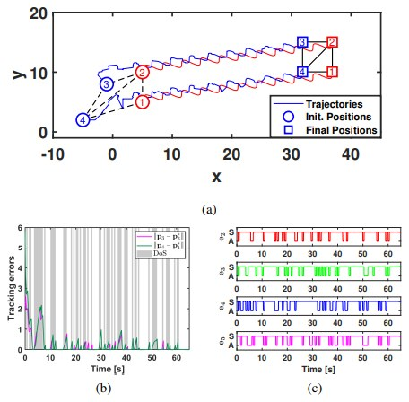
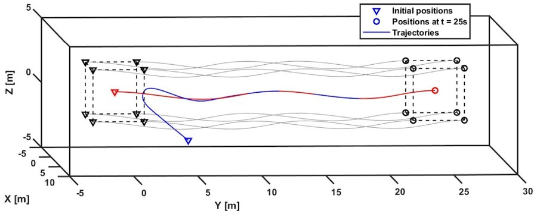
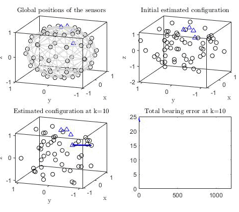
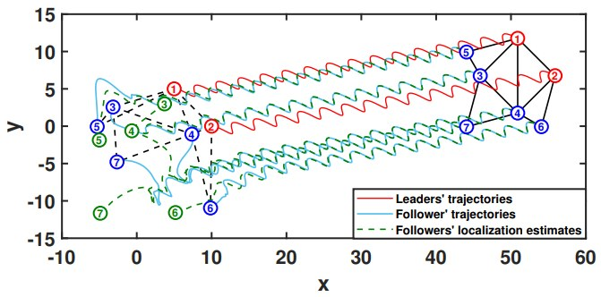

English · Tiếng Việt
Lê Phan Nhật Minh

Nghiên cứu sinh Tiến sĩ, Trường Kỹ thuật Điện và Điện tử
Đại học Công nghệ Nanyang (NTU), Singapore
Người hướng dẫn: GS. Lihua Xie
Giảng viên nguồn, Khoa Tự động hóa
Đại học Bách khoa Hà Nội, Hà Nội, Việt Nam
Liên kết: CV (tiếng Anh), Google Scholar, ORCID, LinkedIn, GitHub, Email
Giới thiệu
Tôi là nghiên cứu sinh Tiến sĩ ngành Điều khiển tự động tại Đại học Công nghệ Nanyang (NTU), Singapore, dưới sự hướng dẫn của GS. Lihua Xie từ tháng 8/2025. Tôi nhận bằng Cử nhân (2022) và Thạc sĩ (2024) ngành Kỹ thuật Điều khiển và Tự động hóa tại Đại học Bách khoa Hà Nội, và là thủ khoa tốt nghiệp của cả hai chương trình (Cử nhân: xếp hạng 1/496). Từ tháng 8/2024, tôi là giảng viên nguồn của Khoa Tự động hóa, Đại học Bách khoa Hà Nội, và là thành viên Phòng thí nghiệm Điều khiển hệ đa tác tử. Trước đó, tôi có hai năm (2022–2024) làm Kỹ sư Dẫn đường và Điều khiển tại Viện Hàng không Vũ trụ Viettel (VTX), thiết kế các bộ điều khiển phi tuyến, bền vững, thích nghi, dựa trên học máy và các thuật toán dẫn đường cho khí cụ bay.
Tôi là “dân điều khiển”! Hướng nghiên cứu của tôi gồm lý thuyết điều khiển, hệ thống điều khiển qua mạng, điều khiển kiên cường (resilient control) và điều khiển dựa trên học. Tôi tích cực tham gia nghiên cứu và giảng dạy, và đã công bố các bài báo trên các tạp chí có bình duyệt trong các lĩnh vực này. Hãy liên hệ với tôi nếu bạn quan tâm đến công việc của tôi!
“Không có gì thực tiễn hơn một lý thuyết tốt.” — Kurt Lewin
Điều thú vị: số Erdős của tôi là 4 (qua GS. Lihua Xie → Li Jun Zhang → Jiuqiang Liu → Paul Erdős).
Quá trình
- 08/2025 – nay: Nghiên cứu sinh Tiến sĩ ngành Điều khiển tự động, Trường Kỹ thuật Điện và Điện tử, Đại học Công nghệ Nanyang (NTU), Singapore
- 08/2024 – nay: Giảng viên nguồn, Khoa Tự động hóa, Đại học Bách khoa Hà Nội
- 07/2022 – 08/2024: Kỹ sư Dẫn đường và Điều khiển, Viện Hàng không Vũ trụ Viettel (VTX), Hà Nội
- 07/2022 – 10/2024: Thạc sĩ ngành Kỹ thuật Điều khiển và Tự động hóa, ĐHBK Hà Nội. Thủ khoa
- 08/2017 – 05/2022: Cử nhân ngành Kỹ thuật Điều khiển và Tự động hóa, ĐHBK Hà Nội. Thủ khoa, xếp hạng 1/496
Công bố tiêu biểu

IEEE TCNS 2026Resilient Tracking of Bearing-Constrained Leader–Follower Formations Under Denial-of-Service Attacks, IEEE Transactions on Control of Network Systems, 2026
Automatica 2025Bearing-Only Solution for Fermat–Weber Location Problem: Generalized Algorithms, Automatica, 2025
IEEE TNSE 2024Randomized Matrix Weighted Consensus, IEEE Transactions on Network Science and Engineering, 2024
arXiv 2026Resilient Angle-Constrained Formation Control and Localization Under DoS Attacks (Extended Version), arXiv:2610.19824, 2026Danh sách công bố đầy đủ (tiếng Anh) →
Tin tức
- 10/2026: Bài preprint mới Resilient Angle-Constrained Formation Control and Localization Under DoS Attacks (Extended Version) trên arXiv
- 2026: Bài báo Complete Controllability of Matrix-Weighted Leader–Follower Networks tại Hội nghị IEEE về Quyết định và Điều khiển (CDC) lần thứ 65
- 2026: Bài báo Angle-Based Formation Tracking of Underactuated Planar Agents, báo cáo miệng tại hội nghị ICARCV lần thứ 19, Vịnh Hạ Long (slide)
- 2026: Bài báo Super-Twisting Sliding Mode Disturbance Observer-Based Neural-Network Controller for Motor Drives tại hội nghị ICEMS 2026
- 2026: Bài báo Resilient Tracking of Bearing-Constrained Leader–Follower Formations Under Denial-of-Service Attacks được đăng trên IEEE Transactions on Control of Network Systems
- 08/2025: Bắt đầu chương trình Tiến sĩ tại NTU, Singapore, với học bổng NTU PhD Research Scholarship, dưới sự hướng dẫn của GS. Lihua Xie
- 2025: Bài báo Bearing-Only Solution for Fermat–Weber Location Problem: Generalized Algorithms được đăng trên Automatica
- 06/2025: Talk show nghiên cứu về học Thạc sĩ ngành Kỹ thuật Điều khiển và Tự động hóa tại ĐHBK Hà Nội, xem Talks
- 04/2025: Talk show nghiên cứu về hành trình học thuật và định hướng nghiên cứu của tôi, xem Talks
- 10/2024: Nhận bằng Thạc sĩ ngành Kỹ thuật Điều khiển và Tự động hóa tại ĐHBK Hà Nội với danh hiệu thủ khoa
- 08/2024: Trở thành giảng viên nguồn của Khoa Tự động hóa, ĐHBK Hà Nội
- 2024: Hai bài báo về đồng thuận có trọng số ma trận và đồng thuận co giãn ma trận được đăng trên IEEE Transactions on Network Science and Engineering